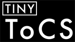

Call for Papers
Tiny Transactions on Computer Science seeks papers describing significant research contributions to the field of computer science. Tiny ToCS is the premier venue for computer science research of 140 characters or less.
Why Tiny ToCS?
Tiny ToCS is a forum for high-quality scholarly discourse that challenges researchers to engage with their work in new capacities. Not only does the restricted format require a concise distillation of scholarly results, but the short format will be more accessible to the Computer Science community at large. Tiny ToCS favors accessible, carefully crafted, creative research, and invites submissions both about novel ideas as well as summaries or distillations of existing work.
We invite submissions on a wide range of computer science research, including, but not limited to:
- Artificial Intelligence
- Computer Architecture
- Computer Networking
- Computer Systems
- Computer Security
- Graphics
- Human-Computer Interaction
- Machine Learning
- Programming Languages
- Theory of Computation
Submissions
Submissions to Tiny TOCS can be up to 140 characters in length, with an abstract of no more than 250 words and a title of no more than 118 characters.
The primary content of submissions should fit into 140 characters. The abstract is not intended to expound upon your finding but instead to provide context for your work. What is the background for your research? Concisely, how does this work improve on related research? Submissions which violate this requirement will be rejected without consideration.
You may use three references in your submission. References will count as one word when used in the abstract section and three letters in the body section ("[1]").
Your submission may not contain any non-text figures or special formatting. Plain-text only. ASCII art okay.
Reviewing will be double-blind and serve primarily to ensure basic quality of accepted papers. Submissions that are unverifiable or purely humorous will be rejected; submissions that highlight nuggets in or concisely summarize existing work are acceptable.
For inspiration, we have provided a sample submission, or refer to Tiny ToCS Volume I.
Submitting Papers and Logistics
Please validate your submission before submitting.
If possible, please format your submission(s) using the Tiny ToCS LaTeX class file. We've provided a sample skeleton file for you. At the least, please submit in PDF format (required by our conference software). And remember, leave names and affiliations off of your PDF.
Important Dates for Volume 2:
- Final submission: February 6, 2013, 11:59 PM PST
- Notification: March 6, 2013
- Publication: March 20, 2013
Publication Details
The proceedings of Tiny ToCS Volume 2 will be posted to the arXiv under a Creative Commons Attribution-NonCommercial-ShareAlike license. Authors will retain all future publishing rights.
Tiny ToCS Volume 2 Organizers
Program co-chairs:- Franziska Roesner, University of Washington
- Yonatan Bisk, University of Illinois Urbana-Champaign
- Samantha Ainsley, Massachusetts Institute of Technology
- Peter Bailis, University of California—Berkeley
- Gilbert Bernstein, University of Washington
- Michele Catasta, EPFL
- Raymond Cheng, University of Washington
- Eva Darulova, EPFL
- Lucas DiCioccio, Technicolor / UPMC Sorbonne Universités
- Aaron J Elmore, University of California—Santa Barbara
- Kyle Fox, University of Illinois Urbana-Champaign
- Sunil Garg, Amazon.com
- Dimitrios C. Gklezakos, University of Washington
- Kevin Karsch, University of Illinois Urbana-Champaign
- Heidy Khlaaf, Florida State University
- Jonathan Kummerfeld, University of California—Berkeley
- Michael Netter, University of Regensburg
- Eoin O'Mahony, Cornell University
- Sunil Pedapudi, Google
- Mark Reitblatt, Cornell University
- Malte Schwarzkopf, University of Cambridge
- Will Scott, University of Washington
- Justine Sherry, University of California—Berkeley
- Pinar Tozun, EPFL
Contact: tiny-tocs-pc at googlegroups dot com

Include a link to Tiny ToCS on your website:
<a href="http://tinytocs.org"><img src="http://tinytocs.org/ttocs-thumb.png"/></a>